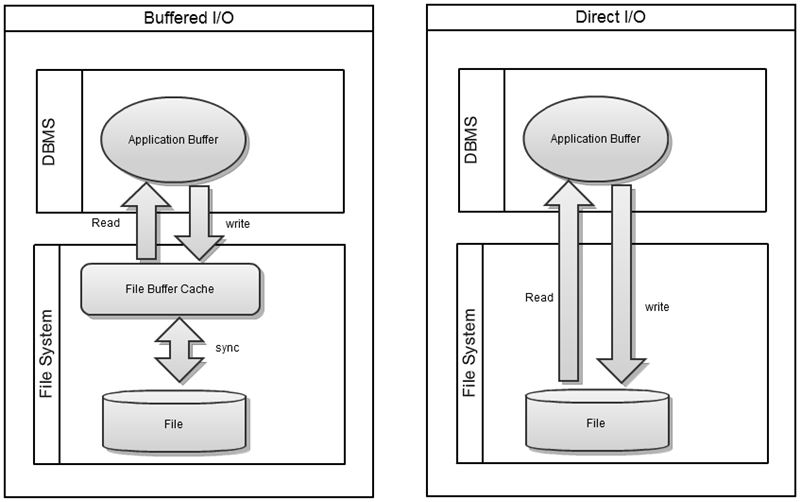

Overview
This section describes the characteristics and configuration of ALTIBASE HDB’s supporting file system.
This guide is up to date as of ALTIBASE HDB version 6.5.
Supporting File System
ALTIBASE HDB supports most file systems with the exception of those that do not provide support for mmap or direct I/O
To utilize direct I/O, it may be necessary to change the mount option from the related file system. In order to utilize direct I/O in a file system that does not provide support for direct I/O, the properties of ALTIBASE HDB itself must be changed. Please refer to the manual or the altibase.properties file for more information regarding relevant settings.
OS | File System | Characteristics |
|---|---|---|
Solaris | UFS | To use Direct I/O,mount options must be changed. |
VxFS |
| |
ZFS | Direct I/O is not supported. DB properties must be changed. | |
HP | HFS |
|
JFS | To use Direct I/O, mount options must be changed. | |
VxFS | To use Direct I/O, mount options must be changed. | |
AIX | JFS |
|
VxFS |
| |
Windows | NTFS |
|
FAT32 |
| |
Linux | Ext2/Ext3/Ext4 |
|
Unsupported File Systems
Attempting to run ALTIBASE HDB on the following filesystems may result in issues due to their lack of support for mmap or direct I/O.
- Raw Storage Device
: ALTIBASE HDB cannot access files configured with a raw storage device. The purpose of using a raw storage device is to directly control the OS’s file cache functions from the database. For this purpose, ALTIBASE HDB can use a file system that supports direct I/O instead of a raw device.
- Part of NFS(Network File System), NAS ( Network attached Storage )
: Errors may occur when ALTIBASE HDB attempts to create a datafile and/or logfile if a NFS/NAS file system that lacks support for mmap is used.
Disk I/O Optimization
The performance of ALTIBASE HDB is closely tied to disk I/O performance. This section describes several methods of improving disk I/O performance.
Striping
Striping is a method used to distribute and store file blocks across multiple disks. It dramatically improves concurrent file input/output performance.
The chosen striping method has a great impact on overall disk performance. In general, either RAID 0 + 1 (Striping + Mirroring) or RAID 5 is used for speed and stability.
The chosen RAID configuration method will also impact the number of physical disks that are required. A storage expert should be consulted to ensure that the appropriate configuration is chosen for the database’s size and number of available disks.
Change OS File Cache Setup
A proper file cache setup can suppress “swap out” conditions in the memory area used by ALTIBASE HDB. This can minimize performance degradation caused by swapping related OS layer disk I/O delay.
The file cache is a kind of system buffer managed by the operating system to relieve bottlenecks by speed differences between main memory and secondary memory. Each operating system manages these file caches using its own unique policy, but it is usually closely related to the operating system’s swapping policy. Swapping is useful when managing an application or a datafile that cannot fit entirely in main memory. However, swapping can delay the disk I/O performance of the OS layer and cause inconsistent database performance. In severe cases, swapping may cause the database itself to hang. Therefore, it is important to take swapping into consideration.
To guarantee consistent response time in ALTIBASE HDB, the related file cache and the swap kernel should be configured in advance to minimize swapping.
Please refer to the documents below for information on how to configure the cache properly:
- HPUX Setup Guide for ALTIBASE
- AIX Setup Guide for ALTIBASE
- Solaris Setup Guide for ALTIBASE
- Linux Setup Guide for ALTIBASE
Direct I/O
The OS file system contains a memory area referred to as the file buffer cache. The file buffer cache is similar to the buffered I/O process depicted below, and is structured in a way that improves disk access performance during file access by caching the accessed blocks.

However, when it directly caches the data at the application level, overhead costs are incurred because the data must move from the disk to the file buffer cache before moving to the database’s buffer cache. This process is also known as “double copying” and results in increased CPU and memory consumption.
In this situation, direct I/O can reduce database CPU and memory utilization because direct I/O does not pass through the OS’s file cache. This reduction in CPU and memory utilization can result in improved overall performance.
To allow ALTIBASE HDB to input/output datafiles and log files using direct I/O, ALTIBASE HDB’s properties(altibase.properties) file must be configured as follows:
- DIRECT_IO_ENABLED = 1 # 0: Buffered I/O, 1:Direct I/O
- DATABASE_IO_TYPE = 1 # 0: Buffered I/O, 1:Direct I/O
- LOG_IO_TYPE = 1 # 0: Buffered I/O, 1:Direct I/O
Some operating systems or file systems may not support direct I/O for files or lack support for direct I/O at the application level. In these cases, configuration changes may need to be made to enable the use of direct I/O.
Mounting options used to enable the use of direct I/O for specific operating systems and file systems are shown in the following table:
OS | File System | Required Action |
|---|---|---|
Solaris | UFS | None |
VxFS | Mount with convosync=direct | |
ZFS | Do not support Direct I/O | |
HP | HFS | None |
JFS | None | |
VxFS | Mount with convosync=direct | |
AIX | JFS | Mount with use -o dio |
VxFS | Mount with convosync=direct | |
Windows | NTFS | None |
FAT32 | None | |
Linux(2.4 > K ) | Ext2/Ext3/Ext4 | None |
When to use Direct I/O
When the database size exceeds the amount of available system memory and the disk buffer size is large, the use of direct I/O is often beneficial.
If the database size is large and large amounts of changes are made frequently, large amounts of disk I/O activity will occur during processes such as checkpoints. If direct I/O is not used, the duplicated copies of data in the OS file cache and the DB buffer cache may result in excessive CPU and memory utilization. If this situation occurs regularly, the use of direct I/O should be considered.
When to use Buffered I/O
In most cases, buffered I/O is preferable for performance because buffered I/O supports multi-block reads. Buffered I/O also pre-fetches required disk pages to improve input and output speed.
Page size
ALTIBASE HDB uses the term of page size which is also commonly referred to as block size. ALTIBASE HDB’s page size is fixed at 32K for memory tables and 8K for disk tables. These page sizes cannot be changed.
In addition, changing the operating system’s block size to match ALTIBASE HDB’s page size is not recommended. Benchmark testing has shown that mismatches between ALTIBASE HDB’s page size and the operating system’s block size have no measurable impact on overall performance.
Related Documents :
Copyright ⓒ 2000~2015 ALTIBASE Corporation. All Rights Reserved.
These documents are for informational purposes only. These information contained herein is not warranted to be error-free and is subject to change without notice. Decisions pertaining to ALTIBASE HDB’s product characteristics, features and development roadmap are at the sole discretion of Altibase. Altibase may own related patents, trademarks, copyright or other intellectual property rights of products and/or features discussed in this document.
{kind=link}
{kind=link}